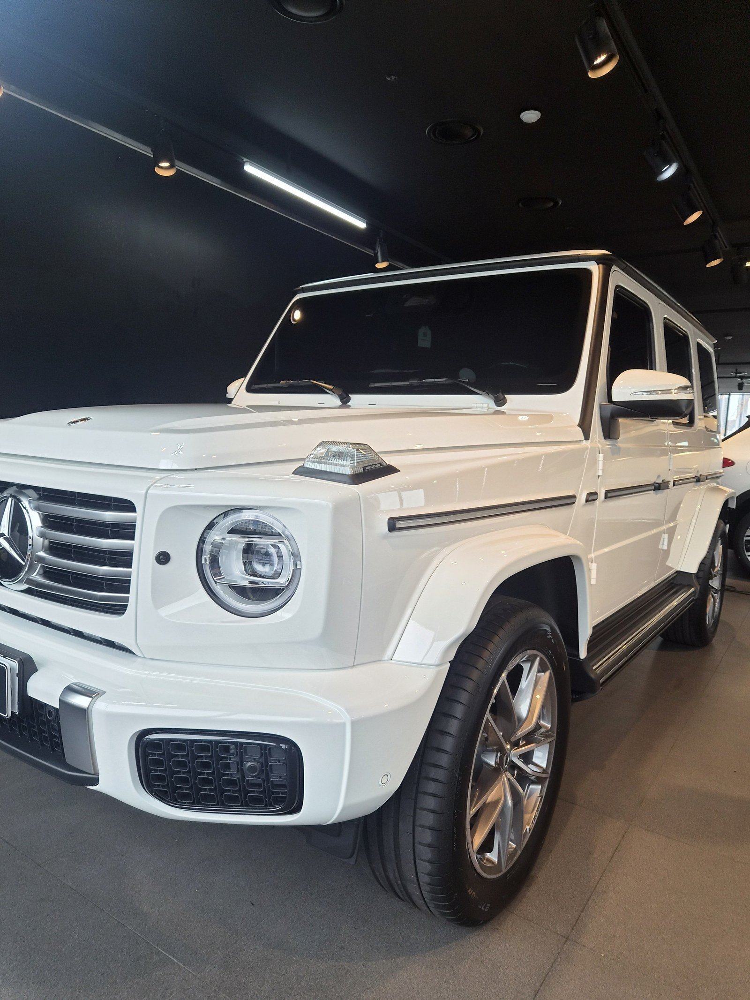
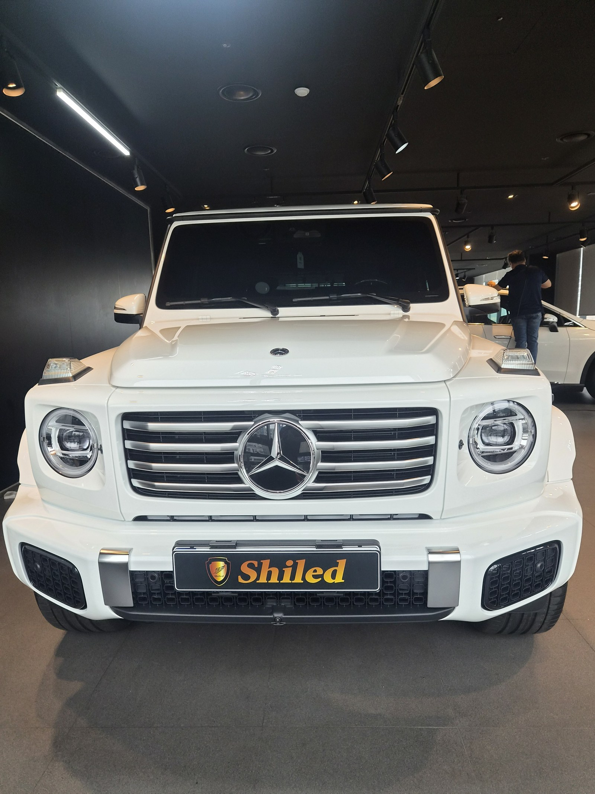
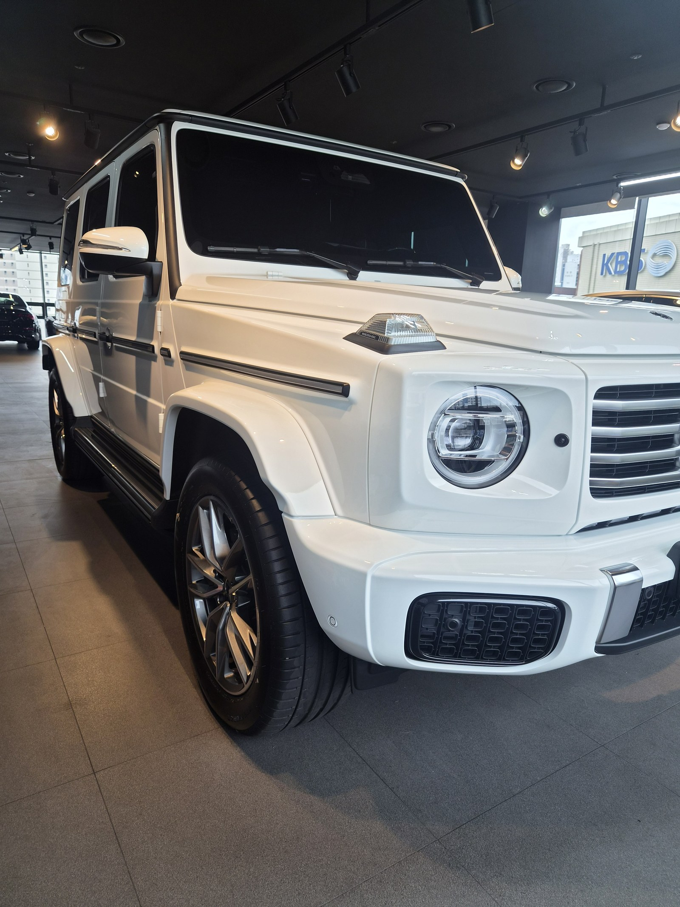
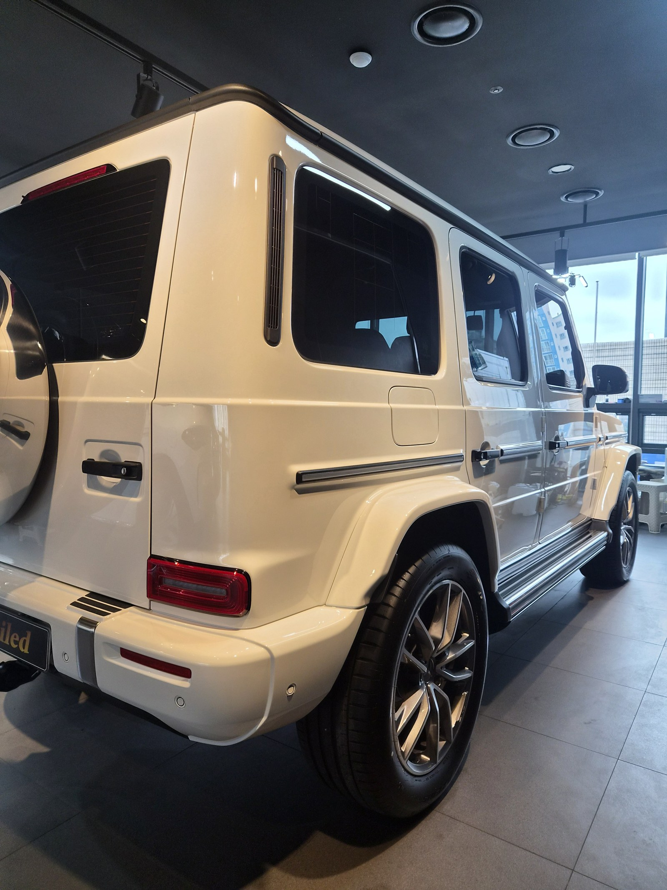
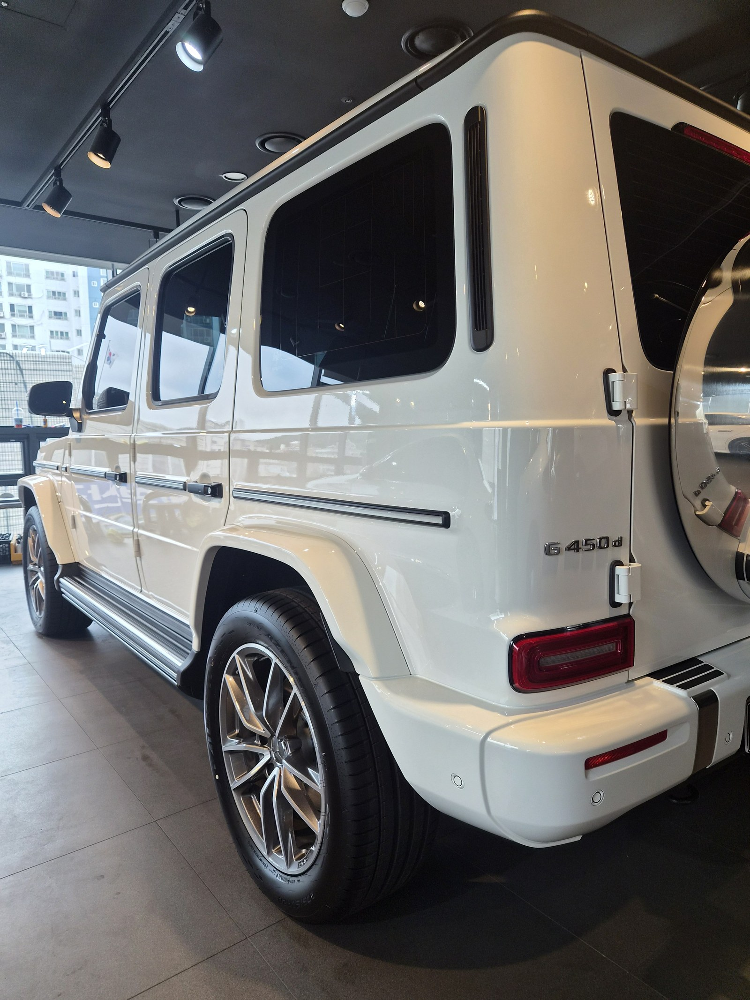
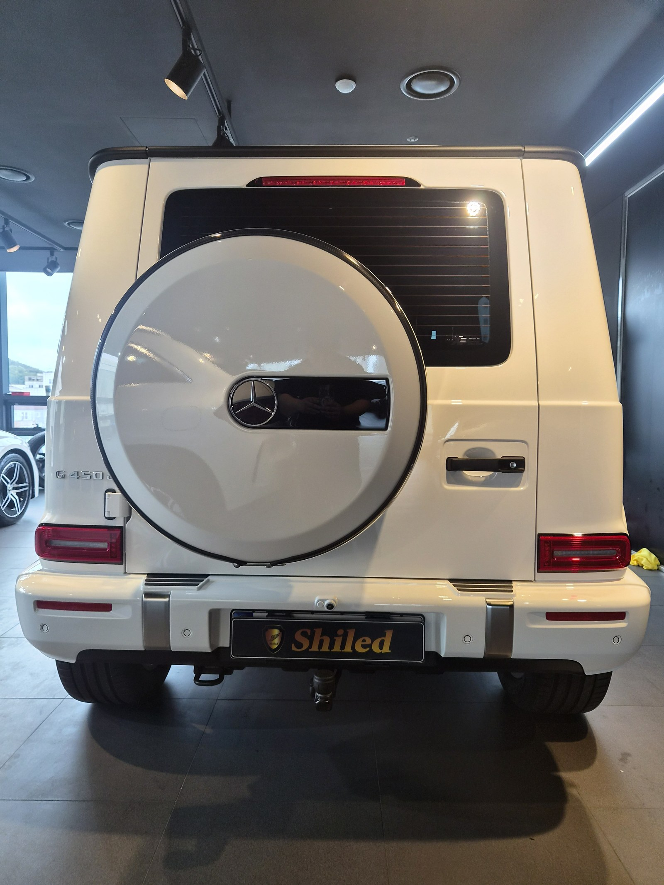
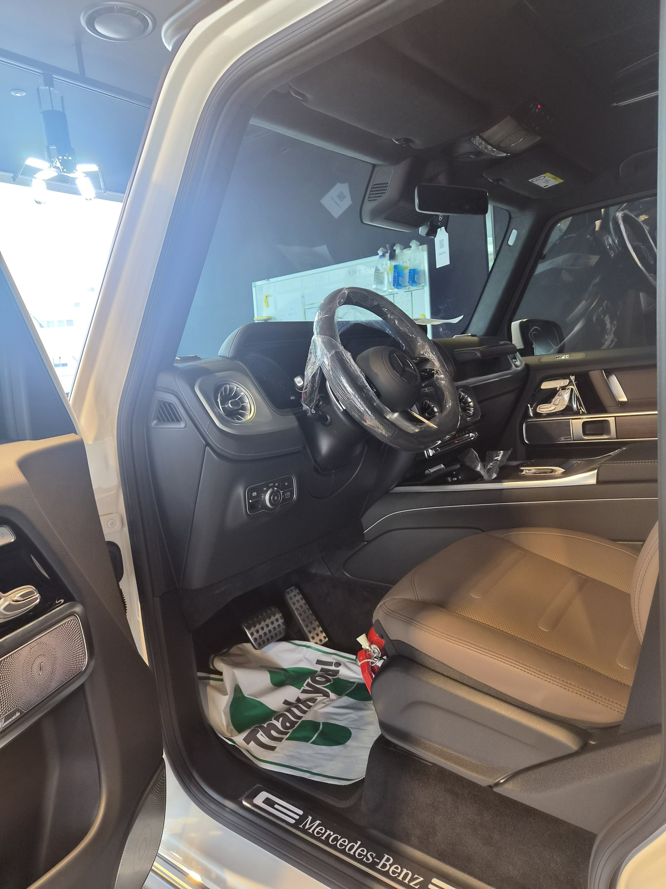
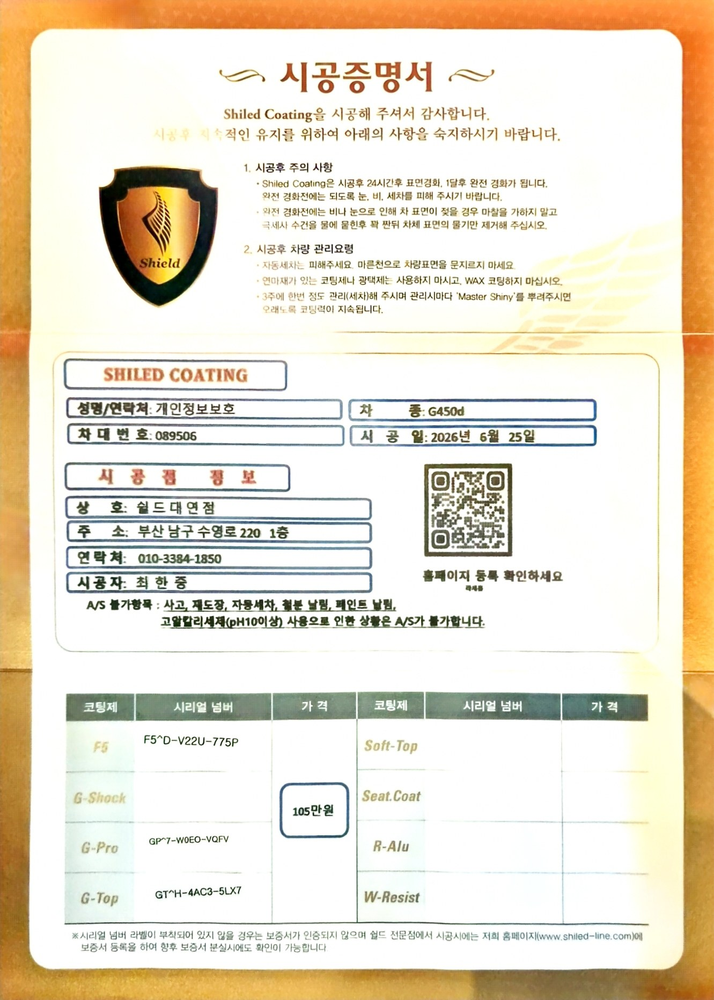

벤츠 G450 화이트입니다. 아직 출고 전, 새 차입니다.
부산 벤츠 유리막코팅으로 이번엔 F5·G-Pro·G-Top을 모두 올리는 트리플코팅으로 진행했습니다.

화이트 G450도 유리막코팅이 꼭 필요한가
화이트는 스크래치보다 오염이 더 잘 보이는 색입니다.
검정과 달리 화이트는 잔기스가 상대적으로 덜 도드라지지만, 물때나 황사 같은 오염은 오히려 더 눈에 띕니다. G-클래스는 각진 보닛과 넓은 도어 패널이 그대로 노출되는 차체라 오염이 앉으면 더 티가 납니다. 출고 전 트리플코팅으로 발수·방오 기반을 두껍게 잡아두면 이후 세차 부담이 확실히 줄어듭니다.

G450에 왜 트리플코팅인가
트리플코팅은 F5·G-Pro·G-Top을 모두 겹쳐 올리는 최상위 풀옵션입니다.
G-클래스는 세단처럼 곡면으로 빛을 흘려보내는 차체가 아닙니다. 평면 패널이 많아서 반사가 왜곡 없이 그대로 드러나고, 코팅 품질 차이도 더 극명하게 보입니다. F5로 색감 깊이와 반사를 살리고, G-Pro로 스크래치 내성을 높이고, G-Top으로 발수·방오력까지 더하면 각진 패널 전체를 빈틈없이 관리할 수 있습니다. 화이트 특유의 매끈한 면에 반사가 또렷하게 살아나는 것도 이 조합 덕분입니다. 코팅제는 대표가 화학공학 전공으로 직접 개발·제조한 제품입니다.


기술자의 팁
신차라고 바로 코팅을 올리지 않습니다. 운송·보관 중 묻은 미세 오염을 디테일링 세차와 탈지로 걷어낸 뒤에 올립니다. 깨끗한 바탕 위에 올려야 코팅이 제대로 밀착합니다.


실내도 신차 그대로 관리합니다
출고 전 차량은 안팎 컨디션을 함께 정리합니다.
스티어링 휠은 아직 보호 필름이 씌워진 신차 그대로입니다. 외부 도장은 트리플코팅으로 윤기와 내구성을 함께 잡고, 실내까지 깨끗한 상태로 관리합니다.

시공증명서를 함께 드립니다
모든 시공 차량에 시공증명서를 드립니다.
차종·시공일·코팅제 시리얼 번호가 적혀 있고, 홈페이지에 등록해 보증을 받으실 수 있습니다. 이 차는 F5·G-Pro·G-Top 트리플코팅으로 기록돼 있습니다.

차종·시공일·코팅제 시리얼이 기재된 시공증명서
자주 묻는 질문
Q. 화이트 G450도 유리막코팅이 꼭 필요한가요?
A. 필요합니다. 화이트는 스크래치는 덜 보이지만 물때·황사 같은 오염이 더 잘 눈에 띕니다. 출고 전 트리플코팅으로 경도와 발수·방오 기반을 함께 잡아두면 세차 주기와 관리 부담을 크게 줄일 수 있습니다.
Q. G-클래스 같은 각진 차체에는 어떤 코팅이 좋나요?
A. 이 차는 트리플코팅(F5+G-Pro+G-Top)으로 진행했습니다. G-클래스는 평면 패널이 많아 코팅 품질 차이가 그대로 드러나는데, 세 가지를 함께 올리면 반사·경도·발수를 모두 확보할 수 있습니다.
Q. 싱글코팅과 트리플코팅은 어떻게 다른가요?
A. F5·G-Pro·G-Top은 각각 색감, 경도, 발수·방오 중 한 가지에 특화됩니다. 트리플코팅은 이 세 가지를 모두 겹쳐 경도·채도·방오성·발수력을 최상위로 끌어올리는 풀옵션 구성입니다.
Q. 신차코팅도 전처리를 하나요?
A. 합니다. 신차라도 운송·보관 중 미세 오염이 묻습니다. 디테일링 세차와 탈지로 표면을 정리한 뒤 코팅을 올려야 제대로 밀착합니다.
Q. 쉴드광택 위치와 예약은 어떻게 하나요?
A. 부산 남구 유엔로220 1F 쉴드광택입니다. 예약·상담은 010-3384-1850, 대표 최한중이 직접 상담하고 책임 시공합니다.
새 차일수록 시작점이 다릅니다. 가장 깨끗할 때 입혀두십시오.
제품을 직접 만드는 사람이 직접 시공합니다.
부산 벤츠 유리막코팅을 고민 중이시면 편하게 연락 주십시오.
어떤 차를 타냐보다 어떻게 타냐가 중요합니다~!
📞 010-3384-1850 견적 문의쉴드광택 · 부산 남구 유엔로220 1F · 대표 최한중